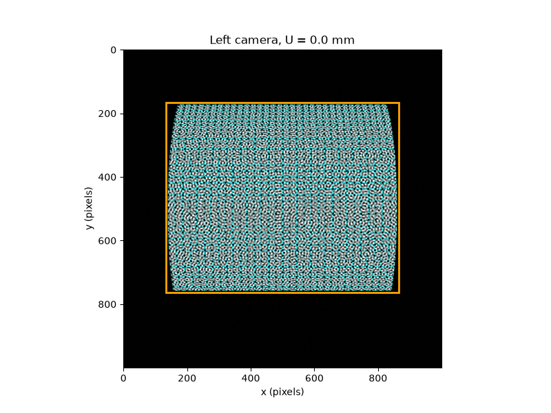
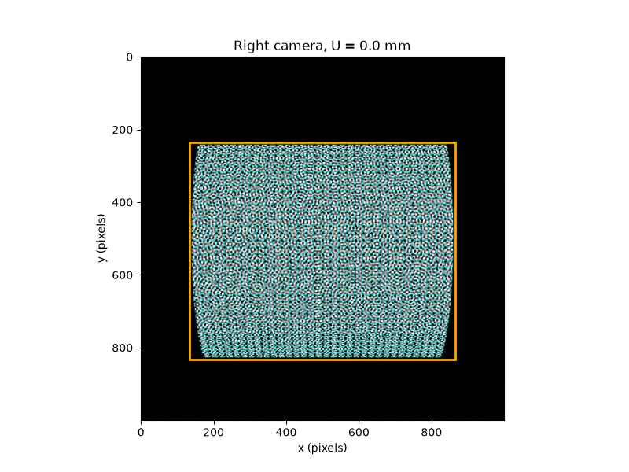
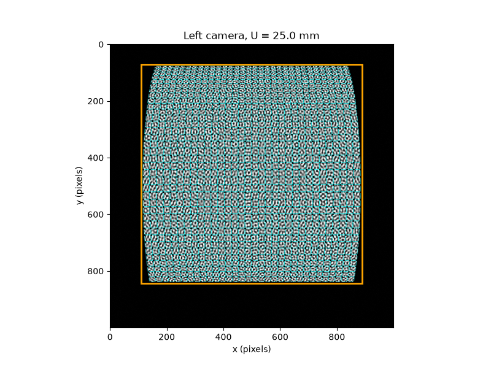
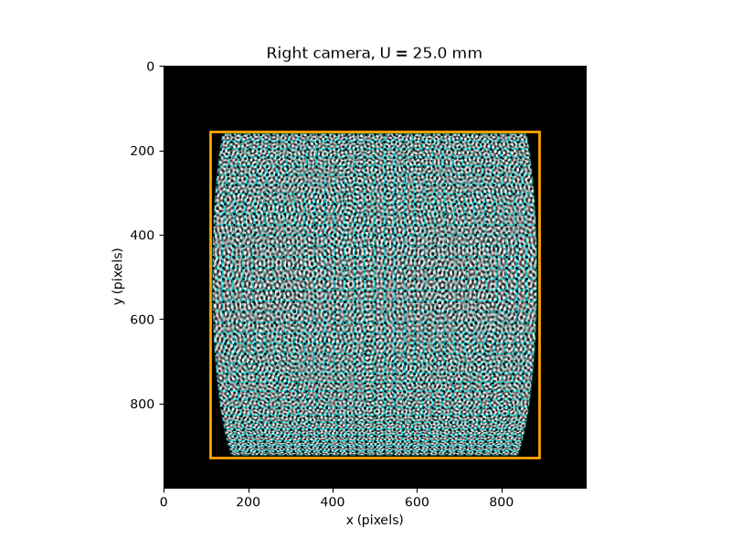

Note
Go to the end to download the full example code.
Synthetic stereo images of an inflated cylinder#
This example renders the synthetic stereo images of a speckled cylinder of radius \(R = 100\) mm inflated by a radial displacement, seen by two cameras, and checks the conservation of the gray levels at the material points with the exact displacements. All the lengths are in millimeters.
Important
Requires the optional package open3d (pip install open3d) for the ray casting
of the 3D surface.
The cylindrical surface#
pysdic.create_3d_quadrangle_4_cylindrical() creates a cylinder of axis \(z\). A
cyclic permutation of the coordinates (a rotation) puts its axis along \(X\):
\(\vec{X}(\theta, h) = (h, R \cos\theta, R \sin\theta)\). Only the part facing the
cameras is meshed, \(\theta \in [45°, 135°]\) and \(h \in [-80, 80]\). With
uv_layout=0, the UV map is \(u \propto \theta\) and \(v \propto h\).
import numpy
from pysdic import create_3d_quadrangle_4_cylindrical
radius = 100.0
t_bounds = (numpy.radians(45.0), numpy.radians(135.0))
h_bounds = (-80.0, 80.0)
mesh = create_3d_quadrangle_4_cylindrical(
lambda h, t: radius, t_bounds=t_bounds, h_bounds=h_bounds, n_t=37, n_h=33, uv_layout=0
)
mesh.coordinates = mesh.coordinates[:, [2, 0, 1]] # Axis of the cylinder along X
print(mesh)
Mesh(n_vertices=1221, n_dimensions=3, n_elements=1152, n_vertices_per_element=4)
- Element Type: 'quadrangle_4'
- Element property: 'uvmap' with shape (1152, 8)
The speckle texture#
The texture is evaluated with pysdic.compute_wave_speckle() at the physical
coordinates (arc length, height) of its texels, of 0.05 mm along both directions, so the
speckle is isotropic on the surface. The first row of the texture is \(v = 1\)
(OpenGL convention). A wavelength of 2 mm gives spots of about 1 mm, i.e. 4 to 5 pixels
in the images (a pixel sees about 0.22 mm of the surface).
from pysdic import Image, compute_wave_speckle
texel = 0.05
arc_length, length = radius * (t_bounds[1] - t_bounds[0]), h_bounds[1] - h_bounds[0]
texture_height, texture_width = int(round(length / texel)), int(round(arc_length / texel))
s = (numpy.arange(texture_width) + 0.5) / texture_width * arc_length
h = (1.0 - (numpy.arange(texture_height) + 0.5) / texture_height) * length
texture = numpy.empty((texture_height, texture_width))
for start in range(0, texture_height, 100): # By blocks of rows, to limit the memory
s_grid, h_grid = numpy.meshgrid(s, h[start : start + 100])
texture[start : start + 100] = compute_wave_speckle(numpy.stack((s_grid, h_grid), axis=-1), wavelength=2.0, n_waves=60)
texture = Image.from_array(texture, ku=1, kv=1) # Linear interpolation: the texture is very resolved
print(f"Texture: {texture_height} x {texture_width} texels")
Texture: 3200 x 3142 texels
The stereo rig#
Two cameras of \(1000 \times 1000\) pixels (focal length 1800 pixels) look at the axis of the cylinder from 500 mm, rotated by \(\pm 8°\) around \(X\) (stereo angle of 16°). Their \(x\) axis is \(X\) and their optical axis points to the axis of the cylinder: the rows of the rotation \(R\) are \((\vec{x}_c, \vec{y}_c, \vec{z}_c)\) and \(\vec{t} = -R \, \vec{C}\), with \(\vec{C}\) the center of the camera.
from scipy.spatial.transform import Rotation
from pysdic import Camera, PerspectiveExtrinsic, PinholeIntrinsic
size, distance, focal = 1000, 500.0, 1800.0
intrinsic_matrix = [[focal, 0.0, (size - 1) / 2], [0.0, focal, (size - 1) / 2], [0.0, 0.0, 1.0]]
def stereo_camera(alpha: float) -> Camera:
center = distance * numpy.array([0.0, numpy.sin(numpy.radians(alpha)), numpy.cos(numpy.radians(alpha))])
z_axis = -center / distance
x_axis = numpy.array([1.0, 0.0, 0.0])
rotation = numpy.stack((x_axis, numpy.cross(z_axis, x_axis), z_axis)) # World -> camera
extrinsic = PerspectiveExtrinsic.from_rt(rvec=Rotation.from_matrix(rotation).as_rotvec(), tvec=-rotation @ center)
return Camera(size, size, extrinsic=extrinsic, intrinsic=PinholeIntrinsic.from_matrix(intrinsic_matrix))
left_camera, right_camera = stereo_camera(-8.0), stereo_camera(+8.0)
The synthetic images#
The cylinder is inflated by \(\vec{u} = U \, (0, Y, Z) / R\), with \(U\) from 0 (reference) to 25 mm (hoop strain of 25 %).
Each image is rendered by pysdic.generate_synthetic_image() with \(3 \times 3\)
rays per pixel: the texture is attached to the material and follows the displacement. The
acquisition adds a Gaussian noise of 1 gray level and a quantization on 8 bits. The ROI of
each image is the zone of the displaced mesh (see pysdic.compute_projected_roi()).
from pysdic import View, add_gaussian_noise, compute_projected_roi, generate_synthetic_image, quantize_image
displacement_levels = (0.0, 12.5, 25.0)
radial_direction = numpy.zeros_like(mesh.coordinates)
radial_direction[:, 1:] = mesh.coordinates[:, 1:] / radius
displacements = [U * radial_direction for U in displacement_levels]
def acquire(camera: Camera, displacement: numpy.ndarray, seed: int) -> View:
rendered = generate_synthetic_image(camera, mesh, texture, displacement=displacement, n_samples=3) # (H, W, 1)
data = quantize_image(add_gaussian_noise(rendered[..., 0], std=1.0, seed=seed), bit_depth=8)
roi = compute_projected_roi(mesh, camera, warp_by=displacement, margin=5)
return View(camera, Image.from_array(data, roi=roi))
left_views = [acquire(left_camera, d, seed=2 * f) for f, d in enumerate(displacements)]
right_views = [acquire(right_camera, d, seed=2 * f + 1) for f, d in enumerate(displacements)]
The images of the reference and of the last frame, with the displaced mesh and the ROI.
from pysdic import ImagePlotter
for frame in (0, len(displacements) - 1):
for name, views in (("Left", left_views), ("Right", right_views)):
plotter = ImagePlotter(views[frame])
plotter.add_image()
plotter.add_roi()
plotter.add_mesh(mesh, warp_by=displacements[frame], show_faces=False, edge_color="cyan", edge_opacity=0.4, vertex_size=1)
plotter.set_title(f"{name} camera, U = {displacement_levels[frame]:.1f} mm")
plotter.show()




Conservation of the gray levels#
The Gauss points visible by both cameras at all the frames are kept (see
pysdic.compute_visibility()). With the exact displacements, the residuals between
two views at the same material points only come from the noise, the rendering and the
interpolation: this is the minimum an SDIC can reach on these images. Without the
displacement, the temporal residuals are of the order of the contrast of the speckle.
from pysdic import IntegrationPoints, compute_visibility
integration_points = IntegrationPoints.from_gauss_points(mesh.element_type, mesh.n_elements)
visible = numpy.ones(integration_points.n_points, dtype=bool)
for f, d in enumerate(displacements):
for view in (left_views[f], right_views[f]):
visible &= compute_visibility(mesh, integration_points, view, warp_by=d)
integration_points = IntegrationPoints(
integration_points.natural_coordinates[visible],
integration_points.element_indices[visible],
weights=integration_points.weights[visible],
)
print(f"{integration_points.n_points} visible integration points")
def gray_levels(view: View, displacement: numpy.ndarray) -> numpy.ndarray:
# Gray levels of the integration points of the displaced mesh in a view
points = mesh.compute_property_interpolation(mesh.coordinates + displacement, integration_points)
return view.image_project(points).gray_levels[:, 0]
def rms(values: numpy.ndarray) -> float:
return float(numpy.sqrt(numpy.nanmean(values**2))) # NaN: point out of the ROI without the displacement
print(f"{'residual':<30} {'exact displacement':>20} {'zero displacement':>20}")
for f in range(len(displacements)):
exact = gray_levels(right_views[f], displacements[f]) - gray_levels(left_views[f], displacements[f])
print(f"{f'stereo, frame {f}':<30} {rms(exact):>20.2f} {'':>20}")
for f in range(1, len(displacements)):
for name, views in (("left", left_views), ("right", right_views)):
reference = gray_levels(views[0], displacements[0])
exact = gray_levels(views[f], displacements[f]) - reference
zero = gray_levels(views[f], displacements[0]) - reference
print(f"{f'temporal {name}, frame 0 -> {f}':<30} {rms(exact):>20.2f} {rms(zero):>20.2f}")
4608 visible integration points
residual exact displacement zero displacement
stereo, frame 0 2.12
stereo, frame 1 1.84
stereo, frame 2 1.76
temporal left, frame 0 -> 1 1.57 75.14
temporal right, frame 0 -> 1 1.57 76.37
temporal left, frame 0 -> 2 1.60 77.00
temporal right, frame 0 -> 2 1.57 77.88
Total running time of the script: (0 minutes 52.822 seconds)